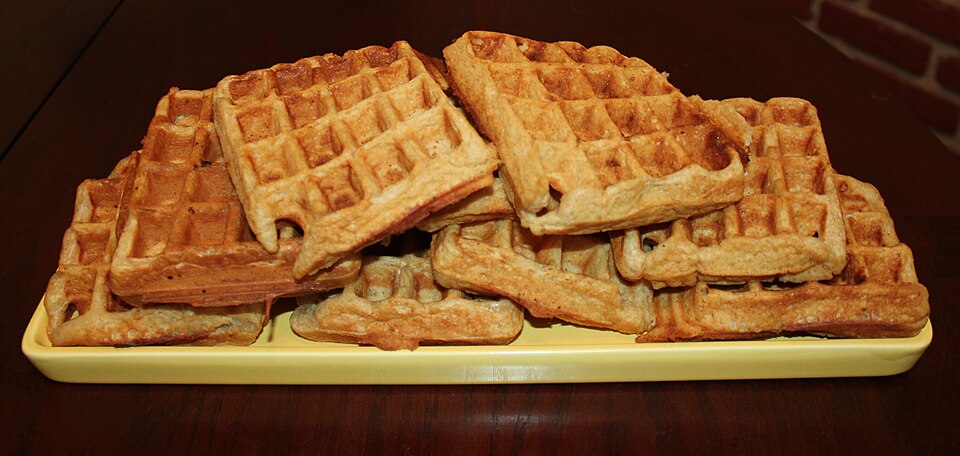

Salgados · Petiscos
Waffle salgado

Ingredientes
- 175 g de farinha de trigo (cerca de 1½ xícara)
- 2 colheres de fermento
- 1 colher de sal
- 2 colheres de açúcar
- 2 gemas
- 225 ml de leite
- 85 g de margarina derretida
- Claras em neve (das 2 gemas)
Modo de preparo
- Misture a farinha, o fermento, o sal, o açúcar, as gemas, o leite e a margarina.
- No fim, misture as claras em neve.
- Asse na máquina de waffle até dourar (tempo usual ~3–5 min por waffle).
Observação
Título original «Waffer (salgado)». Temperatura/tempo da máquina inferidos.